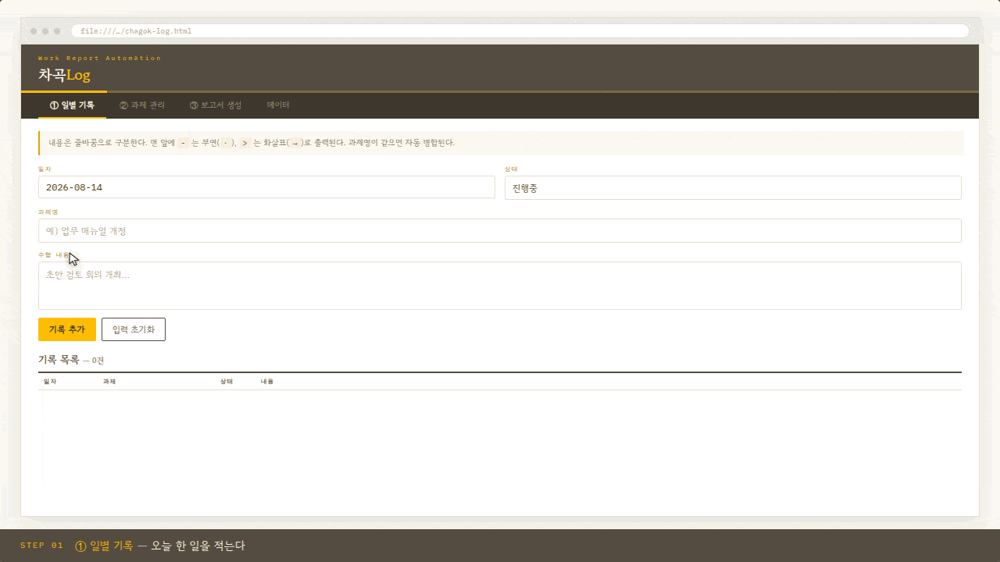

아래 도구를 열고 ③ 보고서 생성 탭에서 「회차 자동설정」을 누르면 바로 시작한다.
일별 기록 입력 → 과제별 배경·담당자 등록 → 마감일 2단 보고서 자동 생성. 사내 시스템에 붙여넣을 텍스트까지 한 번에 뽑는다.
입력부터 보고서 산출까지 전 과정을 자동 재생한다. 약 52초.
4개 화면을 단계별로 설명한다. 인쇄·배포용.
완성된 「주요 추진 실적 및 계획」 2단 양식 예시.
도구의 작동 원리를 7개 장면으로 보여준다. 약 34초.

(계속)
2026-09-18
9.18(금)
차곡Log · Work Report Automation
본 페이지의 예시 데이터는 전부 가상이다